マグネット選択ツール
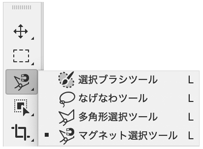
- 「オブジェクト選択ツール」「自動選択ツール」などで選択しづらい、背託したい部分の色が近似色の場合に利用します
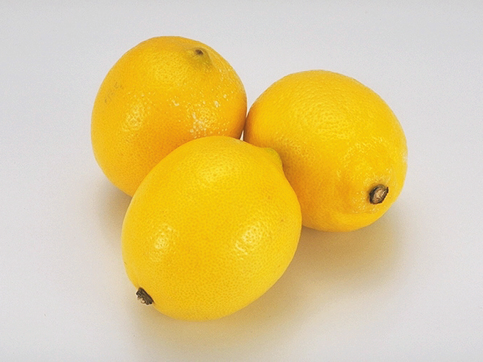
- 明度差のある部分からクリックして始める
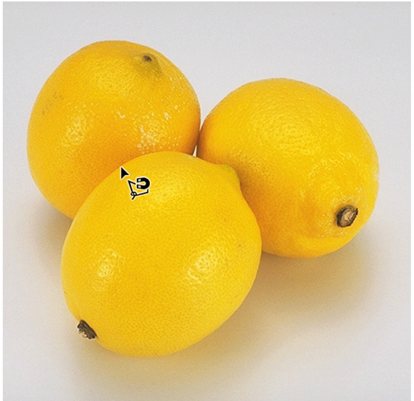
- 最後に「開始点」の上でクリックすると「選択範囲」になります
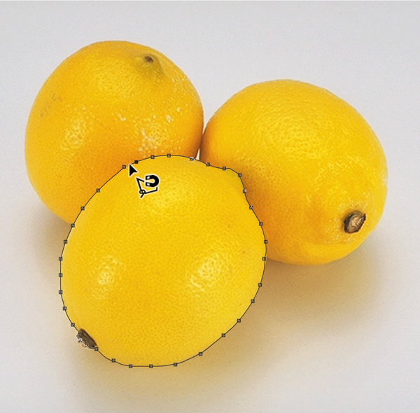
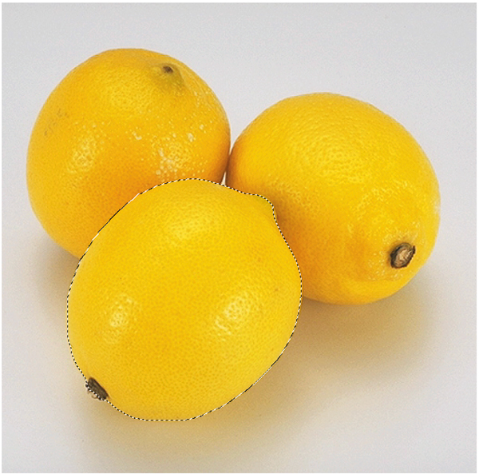
クイックマスクモード
- 「クイックマスクモード」で選択範囲を微調整します
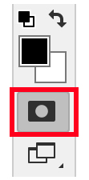
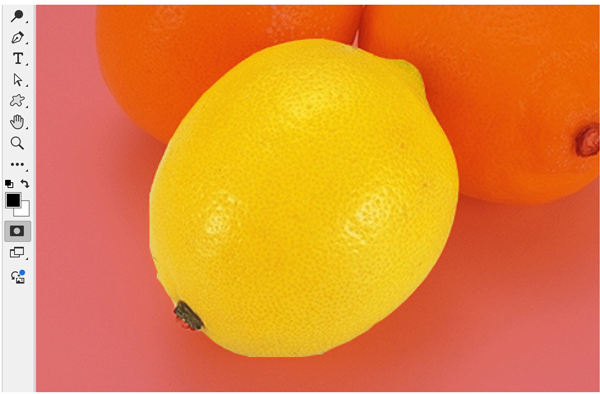
- 「消しゴム」と「ブラシ」で選択範囲を微調整します
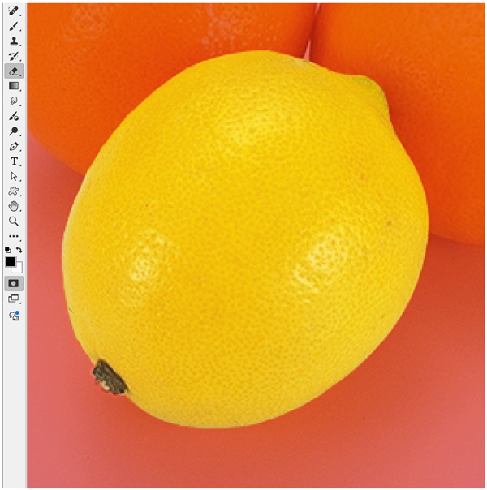
- 「クイックマスクモード」を押して「選択範囲」に変更します
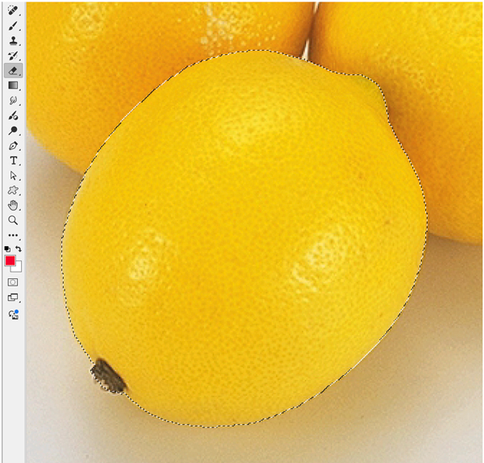
多角形選択ツール
- 直線的な選択範囲を作成する（輪郭をクリックして直線で一筆書きの状態にします）
- 最後は「ダブルクリック」すると「選択範囲」が完成します
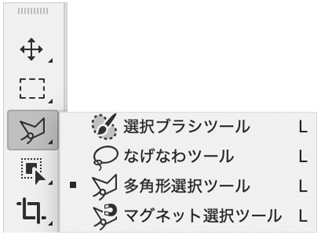
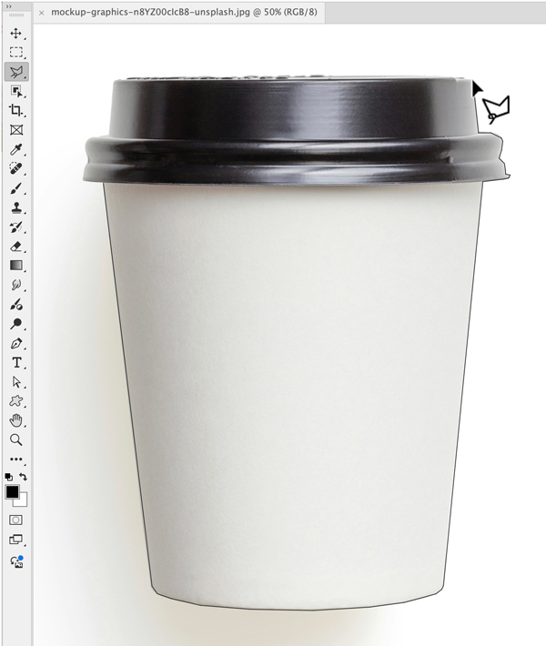
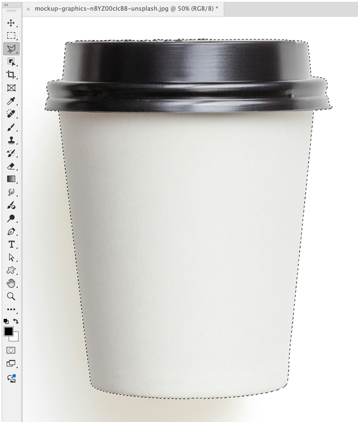